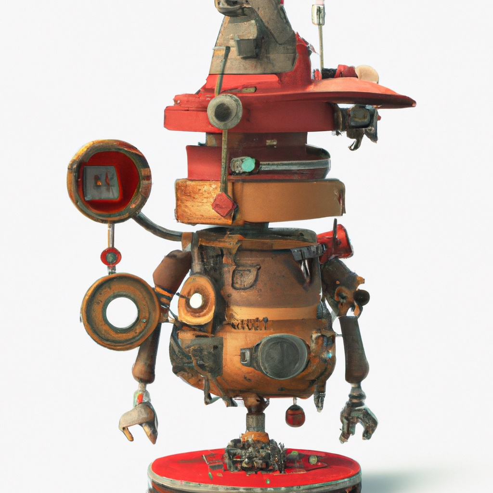

1.1. Models#
Models enable computation and reasoning by robots that operate in the real world.
{kind=link}
To reason about the world and how to act in the world, a robot requires representations of itself, the world that it inhabits, the actions it can perform, how these affect the world, and the sensors at its disposal. In robotics, we refer to these representations as models, and designing appropriate, effective models is an important part of designing any robotic system. For a specific system, the system designer must decide what to represent, and which representational schemes will be most useful.
The first design decision is how to represent the state of the robot and the state of its environment. These representations vary from small, simple, and discrete, to large, complex, and continuous. For example, the vacuum cleaning robot in Chapter 3 models the environment as a collection of rooms and hallways connected by doors, while the logistics robot in Chapter 4 models the warehouse floor as a large, discrete grid, and the drone of Chapter 7 uses a continuous representation for position and orientation of the drone; these representations vary from a small qualitative graph to a dense grid-approximation, to a continuous, six degree-of-freedom model. Likewise, the actions that these robots perform are modeled at different levels of abstraction, ranging from simple deterministic actions, such as for the trash sorting robot of Chapter 2, to applying motor torques to drive propellors for the drone in Chapter 7. Sensors can also be modeled at different levels of abstraction, based on properties of the environment they observe, and the resolution of the data that they provide. In Chapter 2, we use very simple sensors that measure properties like weight and electrical conductivity, both of which provide a single scalar value as the result. At the other extreme, computer vision, which is introduced in Chapter 5, provides a dense and rich set of data.
1.1.1. State#
Choosing the right representation for state is key to effective reasoning about actions in the world.
We use the term state to describe the set of information available to the robot about the world and about itself. Often, the world state is essentially static (except for objects that are manipulated by the robot, or the occasional moving object in the robot’s proximity), while the robot’s state is typically dynamic, changing as the robot moves.. Thus, different representational schemes are often required for the world state and the robot state.
1.1.1.1. Representing the World State#
The robot’s information about its environment is generally referred to as the world state. How to represent the world state depends on the kind of information that is required for the specific tasks to be performed by the robot. High-level, symbolic representations are appropriate when low-level controllers are available to reliably execute specific tasks. This is the case for the trash collecting robot in Chapter 2 and the vacuum cleaning robot in Chapter 3. For each of these, we assume that the robot is able to execute primitive tasks (placing an object in a designated trash bin, cleaning the floor in the current room, moving through a doorway). For these situations, high-level representations allow the robot to build high-level plans, sometimes called task plans, that will be executed using low-level controllers. For example, if the trash sorting robot knows that an object in its workspace is a bottle, it can invoke the primitive action of moving the object to the glass bin, and if the vacuum cleaning robot knows that the living room is adjacent to the kitchen, it can move directly from the living room to the kitchen using the appropriate motion primitive.
From the educational point of view, this level of representation brings the benefit of simplicity, allowing us to introduce other concepts without worrying too much about state representation. For example, we are able to introduce several concepts from probability and estimation theory in Chapters 2 and 3, without getting lost in the notation and nuance typical of a class in probability theory.
While high-level, qualitative state descriptions may be useful for task-level planning, because they fail to capture any of the geometric aspects of the environment, they are less useful when the robot begins to actually move in, and interact with, the world. For example, cleaning the floor in a room is actually a fairly complex action, and, other than in textbooks, is unlikely to be directly encoded as a primitive action in a robot system. For mobile robots, such as the logistics robot of Chapter 4, it is often sufficient to use a discrete grid to represent which parts of the environment contain objects (or obstacles), and thus cannot be traversed by the robot. Occupancy grids, in which the presence or absence of an obstacle is noted for each cell (perhaps probabilistically), are a popular representation for this situation.
In some cases, a more precise geometric description of the world state may be required. Consider the case of an autonomous car, as in Chapter 6, driving in an environment populated with other cars, cyclists, and pedestrians. When objects in the environment are moving, occupancy grids are not an effective representation (e.g., the grid would need to be continuously updated as objects move in the world). In this case, we might choose to associate a specific position and orientation with each object in the environment, and to update these as the object moves. There are several ways to represent this kind of geometric information, but the most common is to define a Cartesian coordinate frame that is rigidly attached to the object (i.e., the relationship between the object and this coordinate frame is fixed, and does not change as the object moves), and to then specify the position and orientation of this coordinate frame relative to a reference frame (possibly the robot’s own coordinate frame, possibly a fixed external reference frame). In Chapters 4 and 5, we will see how stereo computer vision and LIDAR can be used to determine this information for objects in the world.
1.1.1.2. Representing the Robot’s State#
While the robot is, technically speaking, an object in the world, the robot enjoys the special status of being able to act in the world to effect changes. Furthermore, the robot has direct control over its own actions, unlike obstacles or other actors in the world, over which the robot has, at best, indirect control. Therefore, rather than merely incorporate information about the robot into the world state, we typically represent the robot state separately, using representations that are specifically developed for modeling the robot’s geometry, dynamics, and manipulation capabilities.
The most basic information about a robot’s state is merely a description of the robot’s location (and orientation) in its environment, which we will define as the robot’s configuration. The set of all possible configurations will be called the configuration space. This information could be a qualitative, high-level description (e.g., the room in which the vacuum cleaning robot of Chapter 3 is located), coordinates for the robot’s position in a grid or continuous position coordinates in the plane (as for the logistics robot of Chapter 4), continuous coordinates for a position and orientation in the plane (as for the differential drive robot, or DDR, of Chapter 5 and the autonomous car of Chapter 6), or continuous coordinates for three-dimensional position and orientation (as for the drone in Chapter 7).
Above, to represent the position and orientation of an object in the robot’s workspace, we attached a coordinate frame to the object. We do the same for the robot (assuming the robot can be modeled as a single rigid body), and we call this frame the body frame or the body-attached frame. Now, as for objects, specifying the location of the robot is equivalent to specifying the position and orientation of the body-attached frame, and such a specification defines a configuration for the robot. For example, we can define the configuration of a DDR using the coordinates \(q = (x, y, \theta)\), which specify the location of the origin of the body-attached frame along with its orientation relative to a fixed reference frame.
For a drone, we might specify the configuration as \(q = (x,y,z,\phi,\theta,\psi)\), in which \(x,y,z\) give the position of the origin of the body-attached frame, and the angles \(\phi, \theta, \psi\) define the roll, pitch, and yaw angles for the drone’s orientation. The configuration of a robot answers the question of where the robot is at a specific instant in time. If we wish instead to describe the motion of a robot, we must consider the configuration to be time varying, and in this case both the configuration and its time derivative (a velocity) are relevant. We often package the configuration and its time derivative into a single vector
In many disciplines related to robotics, \(x(t)\) is referred to as the system’s state. This is particularly true in the areas of dynamical systems and control theory. In this text, we will maintain a more general use of the term state, but when relevant, we will adopt robot-specific terminology. When the robot is modeled as a rigid body moving in three-space, we often replace \(\dot{x}\) with a six-vector that includes the time derivative of the position of the origin of the robot’s body-attached frame along with the angular velocity vector, denoted by \(\omega\). Note that \(\omega\) is not actually the time derivative of any relevant quantity describing the robot’s motion, but is instead a parameterization of the derivative of a rotation matrix. We will use 3D rotation matrices, their derivatives, and angular velocity in Chapter 7, to describe the motion of drones.
In many applications, position and velocity provide a sufficiently detailed description of robot motion. This is not true, however, when we must explicitly consider forces that affect the robot’s motion, as with the drone, whose motion is determined by aerodynamic forces. For example, we can regard the logistics robot as a device that responds to position and velocity commands: we issue a command to the robot to move to a certain position at a certain velocity, and the robot has no difficulty in executing this command (though there may be uncertainty associated to the motion). There are, however, numerous applications in which simple geometric descriptions of robot motion are not adequate. Consider for example the case of a quadrotor that maneuvers by exploiting aerodynamic forces. In these cases, we typically consider position, velocity, and acceleration, i.e., in terms of \(x\) and \(\dot{x}\), or, if making the configuration and its derivatives more explicit, in terms of \(q, \dot{q},\) and \(\ddot{q}\).
1.1.2. Actions#
By executing actions, robots change the state of the world, as well as their own state.
Models of actions allow robots to construct plans to achieve their goals. In particular, by modeling the affects of actions on the world and on the robot itself, a planning system can construct a sequence of actions to achieve its goals. Action models are intimately connected to state models. Since actions change the state of the world and the robot, the choice of state model determines the vocabulary for the action models. As such, action models tend to mirror the abstraction level chosen for the state.
For high-level state models, such as the trash sorting robot or vacuum cleaning robot, the actions are also defined at a high level. For the trash sorting robot, we will merely assume that actions exist to transfer an object to each of three possible bins, essentially omitting all details of how the action might be implemented. For the vacuum cleaning robot, actions take the form of directed edges in a place graph, in which the vertices represent rooms. As we will see in Chapter 3, if, for example, the robot state is living room, the action “move right” corresponds to changing the state to kitchen (though, when uncertainty comes into play, other outcomes are also possible). In the absence of uncertainty, the action acts as a deterministic mapping from the current state to a next state. For the vacuuming robot, the state space is merely the set of rooms, and one action exists for each possible transit from one room to another.
For robot’s that have continuous configuration or state spaces, we have the choice of whether to represent actions in discrete or continuous time. In the case of discrete time, we typically represent actions at time instant \(k\) as \(u_k\), and define a corresponding mapping from state at time \(k\) to the state at time \(k+1\):
Here, the function \(f(x,u)\) defines the effect of the action on the current state. Typically, for discrete time systems we assume that the time discretization is uniform, \(\Delta t\), and that the time corresponding to time instant \(k\) is thus equal to \(k \Delta t\). It should be emphasized that discrete time systems can have continuous state representations, for example, our logistics robot will have \(x_k \in \mathbb{R}^2\), which takes continuous values in the plane, even though we only note these values at discrete moments in time. Note that we have made several notational choices here. First, we use \(u\) to denote the action, mainly due to this usage in the control theory community. We use the index \(k\) instead of \(t\) to denote the discrete time instant, preferring to reserve \(t\) for the case of continuous time systems. Further, we will use \(x\) to denote state for discrete time systems, even if we are interested only in the configuration \(q\).
In some cases, continuous time representations are preferred. For example, the drone in Chapter 7 moves in continuous time. For continuous time systems, we typically represent the system dynamics as an ordinary differential equation of the form:
In the case of drones, the system dynamics relate the instantaneous velocity of the drone (both linear and angular velocity) to the input thrusts provided by the propellors. Even if we choose to represent actions using continuous time, it is often necessary to discretize time for the purpose of computation (e.g., to determine a drone trajectory using nonlinear optimization). In this case, we typically compute a discrete time approximation for time \((k+1) \Delta t\) by integrating the system dynamics over the relevant time interval:
1.1.3. Sensors#
Actions allow the robot to affect the world. Sensors allow the robot to perceive the world.
A robot’s sensors provide information that can be used to infer things about the world, about the robot, and about the robot’s location in the world. In general, an abstract sensor model can be written as
in which the measurement is denoted by \(z\) and the function \(h(\cdot)\) maps from the current state to a sensor value. The form of \(h\) depends, of course, on the sensor. For the trash sorting robot of Chapter 2, one sensor measures the electrical conductivity of an object, and merely returns “true” or “false.” Another sensor returns the real-valued weight of the object in kilograms. These sensors are simple to implement, fairly robust, and require physical contact with the object of interest.
Simple non-contact sensors include proximity sensors (which detect the presence of a nearby obstacle), RFID sensors (which return a distance to the nearest RFID beacon), and GPS-style location sensors (which return the coordinates of the sensor in the GPS system’s coordinate frame). Each of these returns a set of scalar values, and each is used by the logistics robot of Chapter 4.
Inertial Measurement Units (IMUs) measure how a rigid body moves through space. These sensors are ubiquitous nowadays. For example, every modern phone is equipped with such sensors. In this book, we will use IMUs in Chapter 7 to measure the state of a drone that flies through three-dimensional space. The measurements returned by the sensor include gyroscope, accelerometer, and magnetometer readings.
Vision-based sensors are the most complex sensors that we will study, and they provide the richest set of sensor data. Cameras provide a two-dimensional array of pixel values (an image) that can be gray-scale or full color (e.g., Red, Green, Blue). In addition, color cameras are now available that also provide depth information for each pixel in the image (i.e., for each pixel, the sensor determines the physical distance to the object that is “seen” in that pixel). Such cameras are called RGB-D cameras, indicating that they return Red, Green, Blue color values and Depth information for each pixel.
LIDAR (LIght raDAR) is a special kind of vision sensor that uses laser time of flight to measure the depth to points in the sensor’s field of view. In this case, the sensor returns an array of \((x,y,z)\) values, called a point cloud. LIDAR is particularly popular for autonomous cars, which we discuss in Chapter 6.